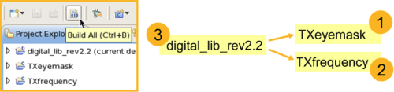
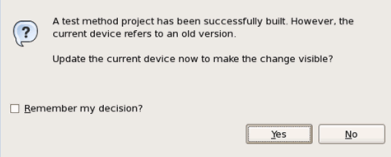

Building projects
You may build just a single project or all projects together. This topic describes how builders act in SmarTest.
Building all projects
- Project references determine the build order:
Referenced projects are built first.
- Building all projects analyzes the project hierarchy and builds projects "bottom up".

How to build all projects:
- On the toolbar, click Build All
- Press Ctrl+B
- On the menu, click
Building a single project
Building a single projects saves time.
- When building a test method project, SmarTest compiles the code and links test method
library.
When SmarTest successfully built the projects, you are asked if you want the update the current device (see below, building a device project), too.

- When building a device project, SmarTest registers the referenced test methods libraries.
How to build a single project:
- In the Project Explorer, select the project you want to build.
- Build the project:
- In the Project Explorer, right-click the project and select Build Project from the shortcut menu.
- On the menu, click .
Functional changes
- Introduced in SmarTest 7.1.3